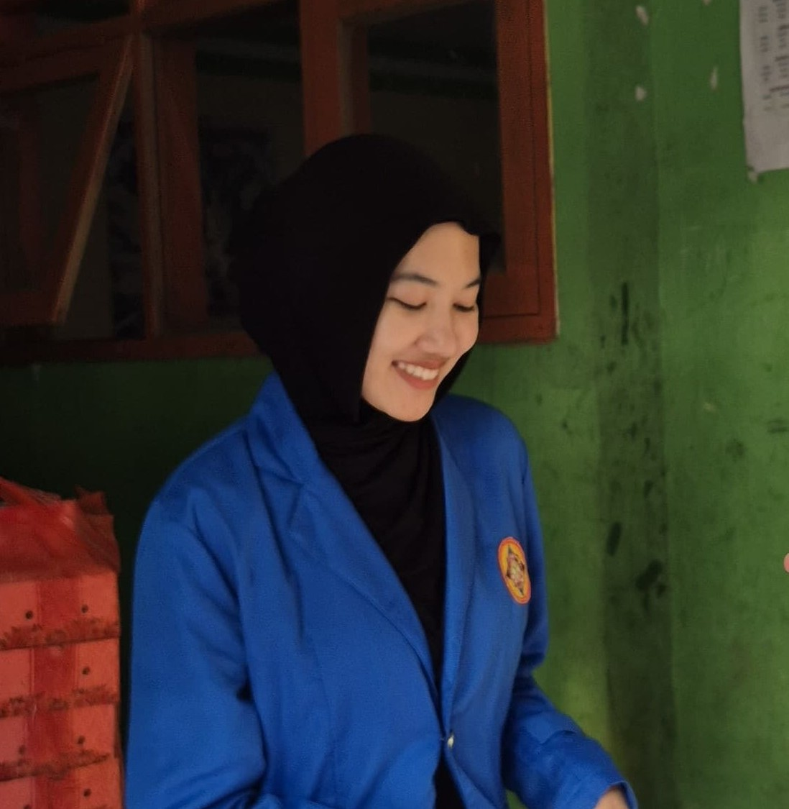

PORTFOLIO
WEB DEVELOPER
Mahasiswa Sistem Informasi Semester 5 Universitas Pamulang Kampus Serang. Berfokus pada pengembangan web dan manajemen sistem.

Tentang Saya
Halo! Saya Amalia Putri, seorang pengembang web dan mahasiswa aktif di Universitas Pamulang. Saya memiliki ketertarikan mendalam dalam merancang sistem, membangun antarmuka web yang bersih, serta mengoptimalkan fungsionalitas teknologi untuk kebutuhan modern.
Keahlian (Skill)
HTML & CSS / Frontend
PHP & MySQL
JavaScript Dasar
Flutter & Dart (Mobile)
Analisis Proses Bisnis
Manajemen Basis Data
Proyek Terbaru
Proyek Web 1
Aplikasi web interaktif dengan sistem pengelolaan basis data yang terstruktur.
Proyek Web 2
Pengembangan antarmuka website responsif dan ramah pengguna (user-friendly).
Video Kegiatan
Dokumentasi aktivitas perkuliahan dan pengembangan proyek:
Kontak Saya
📧 Email: amaliaputriww@email.com
📱 Telepon / WhatsApp: 08876892229
🏛️ Kampus: Universitas Pamulang Kampus Serang